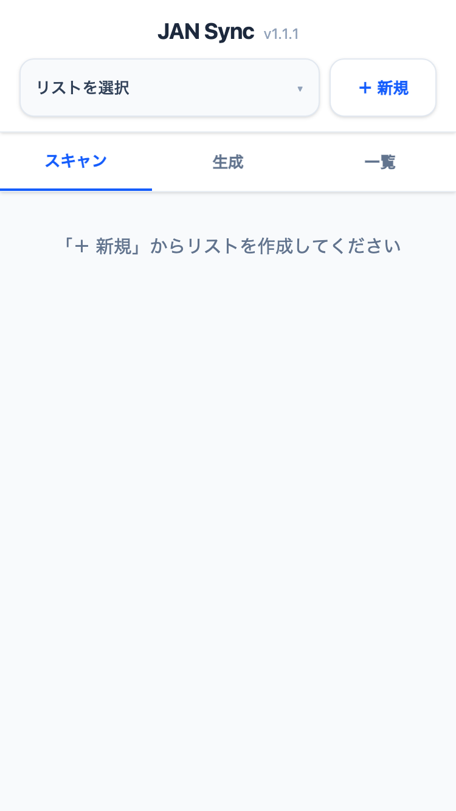
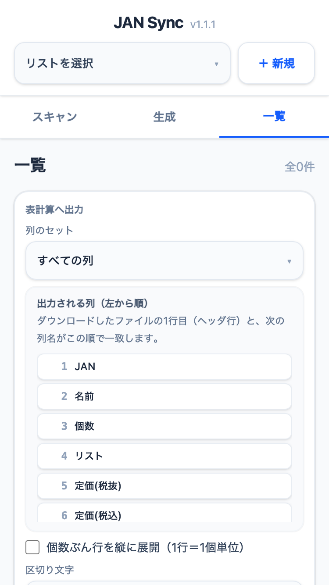
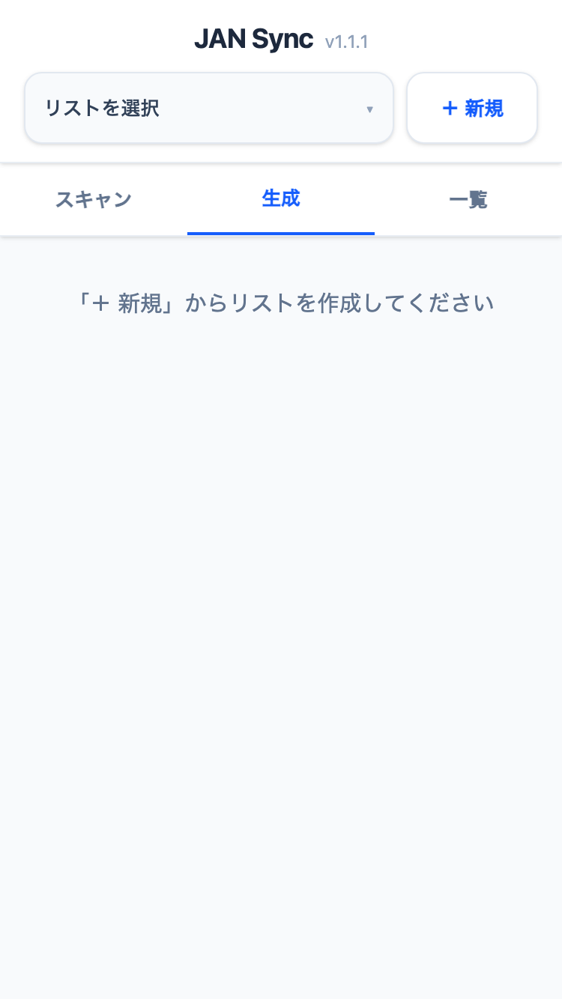

JAN Sync
導入ガイドオフラインでサクサク動く、現場特化型スキャン＆在庫管理ツール
スマホでアクセス ▼
jan-sync.pages.dev
1. リスト作成 ＆ スキャン

- 画面右上の「＋ 新規」から作業向けリストを作成します。
- バーコードを写し数量や価格を保存します。(保存後も履歴から修正可能)
- 【小技】商品名に「Amazon」等と入力しGoogle / Yahooボタンを押すと相場検索に便利です。
-
便利なスキャン設定 (画面上で切替):
- 連続スキャン: 確認画面を出さずに次々読み取る
- 棚卸しモード: 同一商品を連続読込で自動加算
2. データ一覧・出力

- 一覧表示、検索、タップでの内容修正や「一括削除」が可能です。
-
データ出力設定 (CSV / TSV対応):
- JANの0落ちを防ぐTSV出力を推奨
- 用途に応じて出力される列の選択が可能
- 「個数を行展開」(1個につき1行出力)機能
3. バーコード一括生成

- 保存したリストを選んで、一覧形式で商品のバーコードを画面上に一括出力できます。
- 棚のラベル生成やバックヤードでの確認用としてご活用ください。